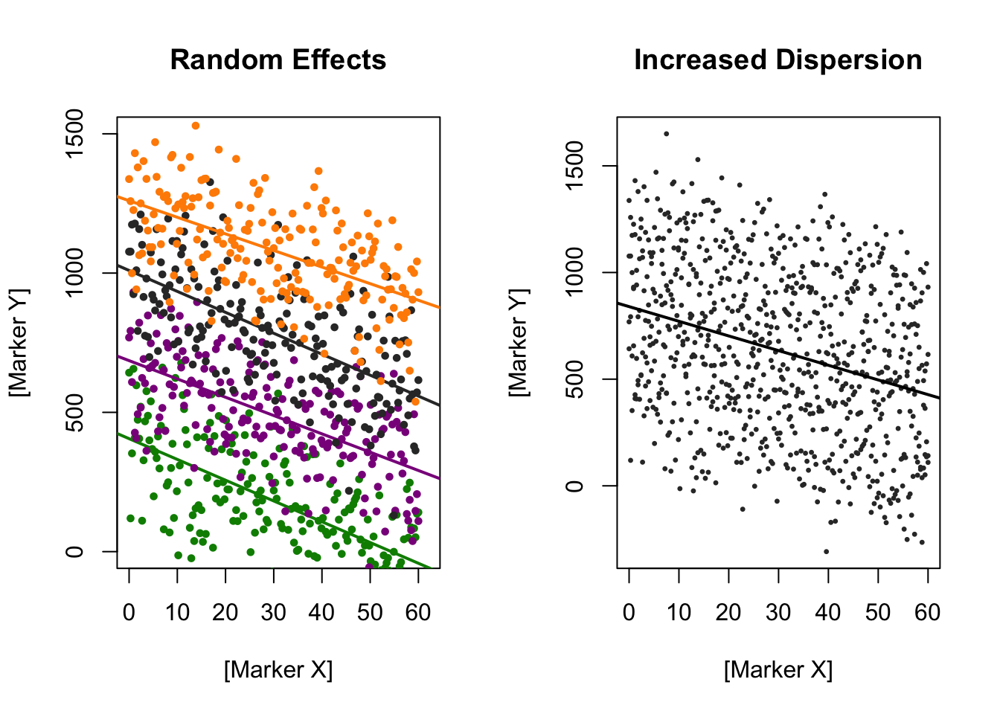

Chapter 14 Linear Mixed Models
This is a slightly left-field extension chapter (not written by the original authors) that discusses the role of linear mixed models as an extension to ANOVA for analysing longitudinal data.
14.1 Background
All ANOVAs discussed to date form linear models — as explicitly highlighted by R in the process of calling a linear model in the form of aov( Y ~ X1 + X2 + ...), which is ‘syntactic sugar’ for aov(lm(Y ~ X1 + X2 + ...)). The difference between the two largely are philosophical: with a change of naming and the interpetation of the model, we can make the same conclusions in a slightly different guise.
In linear regression, we change the language of the problem to be solved. Traditionally, and in a slightly overly-formal way, given a (random) sample of points \((Y_i,X_{i1},\cdots,X_{ip})\) where \(i=1\cdots n\) represent each individual data point and \(p\) the total number of independent variables, linear models aim to describe the dependent variable \(Y\) as
\[ Y_i = \beta_0 + \beta_1 \phi_1 ( X_{i1}) + \cdots + \beta_p \phi_p(X_{ip}) + \epsilon_i\qquad i=1,\ldots,n; \] where the \(\beta\)’s are unknown coefficients to be determined, and the \(\phi\)’s are (known) potentially non-linear functions of \(X\). Linear models are therefore called linear as they are linear in their parameters, not (necessarily!) the independent variables.
The most common way to actually try to find the value of each \(\beta\) is through ordinary least squares – minimising the sum of the squares of differences between what the model predicts, and the data actually observed. Note that there are many different interpretations ultimately of the results. If \(X_{1i}\)is, say, a person’s blood pressure at age 65, and \(Y_{i}\) their age at death, and our goal is to predict a person’s age of death on the basis of their blood pressure – then, unsurprisingly, this is known as a prediction problem. If the value of \(\beta\) for that predictor is not significantly different from zero, well, we conclude that blood pressure does not affect age at death.
If, on the other hand, \(Y_i\) is a discrete, binary number that denotes whether they lived or died, then this is a form of a classification problem – and a different, but related mathematical framework needs to be used, often with nonlinear functions that transform the space of \([0,1]\) to \((-\infty,\infty)\).
If, however, we just want to find the form of the equation linking them – particularly values of the parameters in the equation – and don’t really care about the \(X\)’s and \(Y\)’s beyond using them to determine the \(\beta\)’s, then this is a curve fitting problem.
Why does this matter? Well, ANOVA and linear regression are equivalent when the two models test against the same hypotheses and use an identical encoding, that is, an understanding of what the interpretation of the \(X\)’s is. The models differ in their basic aim: ANOVA is mostly concerned to present differences between categories’ means in the data while linear regression is mostly concern to estimate a sample mean response and its associated variance. So, one can describe ANOVA as a regression with dummy variables. We can easily see that this is the case in the simple regression with categorical variables – typically mathematically encoded as either an integer determining if a subject is part of a given group, or not.
14.2 Mathematical detail
Suppose for the sake of argument that your data-set consists of a set \((x_i,y_i)\) for \(i=1,\ldots,n\) and you want to look at the dependence of \(y\) on \(x\) – i.e. let’s consider a simpler subset of the above. Suppose further you find the values \(\hat\alpha\) and \(\hat\beta\) of \(\alpha\) and \(\beta\) that minimize the residual sum of squares
\[ \sum_{i=1}^n (y_i - (\alpha+\beta x_i))^2. \] Then you take \(\hat y = \hat\alpha+ \hat\beta x\) to be the predicted \(y\)-value for any (not necessarily already observed) \(x\)-value. That’s linear regression. Now consider decomposing the total sum of squares \[ \sum_{i=1}^n (y_i - \bar y)^2 \qquad\text{where }\bar y = \frac{y_1+\cdots+y_n}{n} \] with \(n-1\) degrees of freedom, into “explained” and “unexplained” parts: \[ \underbrace{\sum_{i=1}^n ((\hat\alpha+\hat\beta x_i) - \bar y)^2}_{\text{explained}}\ +\ \underbrace{\sum_{i=1}^n (y_i - (\hat\alpha+\hat\beta x_i))^2}_{\text{unexplained}}. \]
with \(1\) and \(n-2\) degrees of freedom, respectively. That’s analysis of variance, and one then considers things like F-statistics, as allued to earlier:
\[ F = \frac{\sum_{i=1}^n ((\hat\alpha+\hat\beta x_i) - \bar y)^2/1}{\sum_{i=1}^n (y_i - (\hat\alpha+\hat\beta x_i))^2/(n-2)}. \] This F-statistic tests the null hypothesis \(\beta=0\). It’s exactly the same as before.
One often first encounters the term “analysis of variance” when the predictor is categorical, so that you’re fitting the model
\[
y = \alpha + \beta_i
\]
where \(i\) identifies which category is the value of the predictor. If there are \(k\) categories, you’d get \(k-1\) degrees of freedom in the numerator in the F-statistic, and usually \(n-k\) degrees of freedom in the denominator. But the distinction between regression and analysis of variance is still the same for this kind of model. And that’s, ultimately, why R’s help explicitly states that aov fits an analysis of variance model by a call to lm for each stratum.
14.3 Mixed models – a mathematical introduction
With that large introduction aside, linear mixed models are an extension to the above. Rather than having one error term, \(\epsilon_i\) which overall is normally distributed with zero mean and some (unknown) variance \(\sigma^2\), we relax this assumption. The mixed bit is that instead of just including fixed effects – corresponding to the fixed, common \(\beta\)’s above, we include additional random-effect terms, which are often appropriate for representing clustered, and therefore dependent, data. Examples include when data are collected hierarchically, when observations are taken on related individuals (such as siblings), or when data are gathered over time on the same individuals. The latter is particularly commonly performed in longitudinal experiments.
Like most areas of statistics, mixed models are a large and complex subject, and this set of notes is not intended to be definitive. The full mathematical expression for a general linear mixed model is mildly hairy, but the basic idea behind a random effect is that instead of having one true \(\beta\) it is the case that \(\beta\) is itself a random variable. That is, say, \(\beta_{1} \sim N(\mu_{\beta_{1}}, \sigma_{\beta_{1}})\). Were we to write this out in full, in the most general form, we’d end up with a moderately complicated set of equations:
\[ y_{ij} = \overbrace{\beta_1 x_{1ij} + \cdots \beta_p x_{pij} }^\text{fixed effects} + \underbrace{b_{i1}z_{1ij} + \cdots + b_{iq} z_{qij}} _ \text{random effects} + \epsilon_ij \]
\[ b_{ik} \sim N(0,\psi_{k}^{2}), \quad \text{Cov}(b_k,b_{k'}) = \psi_{kk'} \]
\[ \epsilon_{ij} \sim N(0,\sigma^2 \lambda_{ijj'}),\quad \text{Cov}(\epsilon_{ij},b_{k'}) = \psi_{kk'} \]
where (get ready for it!)
- \(y_{ij}\) is the response variable for the \(j\)th observation, out of \(n_i\) in total, within the \(i\)th group of \(M\) groups in total;
- \(\beta_1,\ldots\,\beta_p\) are the fixed-effect coefficients; identical across all groups;
- \(x_{1ij},\ldots,x_{pij}\) are the regressor variables for the fixed-effects for observation \(j\) in group \(i\);
- \(b_{i1},\ldots,b_{iq}\) are the random-effect coefficients for group \(i\). These are all assumed to be multivariately normally distributed; for example, representing individual variability but drawn from some underlying population. Moreover, they are thought of samples as random variables – not as parameters to find – and are therefore in some sense similar to the errors, \(\epsilon_{ij}\).
- \(z_{1ij},\ldots,z_{qij}\) are the random effect regressor variables – for example, subject ID.
- The \(\psi^{2}_{k}\)’s are the variances and \(\psi_{kk'}\) covariances among the random effects, which are assumed to be constant across the groups. Similarly, \(\sigma^2\lambda_{ijj'}\) represent covariances between errors in group \(i\). What form this exactly takes can be a bit hard to pin down, but if each observation is determined separately across groups, and assumed to have constant variance in error, then \(\lambda_{ijj}=\sigma^2\) if \(j=j'\) and \(0\) otherwise. This model often is not terribly appropriate if observations are in a “group” across time, as the observations are likely to have some degree of autocorrelation. Nevertheless, it is often far easier, and the error performance of the model can be checked after construction.
14.4 An example
Practically, what this means is that given effects can be stratified by further sub-groups that may be ‘lumped’ together in a conventional analysis. The distinctions between the different random effects and group effects can be very important: the difference between within-groups and between-groups predictors can be totally anti-correlated. The most famous example of this is Simpson’s “paradox”, in which ignoring this grouping variable can lead to totally different conclusions.
Here’s an example. Let’s generate a variety of \(x\) and \(y\) variables that have exactly one fixed effect, looking at the relationship between marker X and marker Y.
Figure 14.1: A brief example of Simpson’s paradox: the trend for each dataset is different individually to that as a whole
These data have a twist: they’re coloured by a grouping variable, and crucially the intercept for that random variable is correlated with \(x\). In a study context, this may well arise due to, for example, learning as some lurking variable. Rather irritatingly, the overall trend when data are summed therefore appears to be completely opposite to that in each individual group. There’s something else going on here, and the best way to quantify it is through mixed modelling. If we perform a conventional ANOVA on the linear model, we’d just call summary(lm(y ~ x, simpson)); using the lm syntax directly:
##
## Call:
## lm(formula = y ~ x, data = simpson)
##
## Residuals:
## Min 1Q Median 3Q Max
## -477.53 -144.88 -13.83 138.87 592.10
##
## Coefficients:
## Estimate Std. Error t value Pr(>|t|)
## (Intercept) 326.5564 23.1228 14.12 <2e-16 ***
## x 7.4935 0.6967 10.76 <2e-16 ***
## ---
## Signif. codes: 0 '***' 0.001 '**' 0.01 '*' 0.05 '.' 0.1 ' ' 1
##
## Residual standard error: 198.8 on 402 degrees of freedom
## Multiple R-squared: 0.2235, Adjusted R-squared: 0.2215
## F-statistic: 115.7 on 1 and 402 DF, p-value: < 2.2e-16we see that the intercept and the coefficient for \(x\) are both highly different from zero, and the coefficient of \(x\) is positive – as you might well expect. But, calling the same thing through a mixed model (with the lme4 and lmerTest packages) yields a rather different answer. Here, we’re saying that the Groups is our random effect, allowed to have a different intercept per group, but a common mean. If we wanted to relax that assumption, we’d write (Groups|Groups), but the resulting model would be very underdetermined and (in this case) not very informative. The use of the lmerTest is a convenience wrapper to provide \(p\)-values from mixed models; we can also call anova directly.
## Linear mixed model fit by maximum likelihood . t-tests use Satterthwaite's
## method [lmerModLmerTest]
## Formula: y ~ x + (1 | Groups)
## Data: simpson
##
## AIC BIC logLik deviance df.resid
## 5194 5210 -2593 5186 400
##
## Scaled residuals:
## Min 1Q Median 3Q Max
## -3.1190 -0.7304 -0.0534 0.6110 3.4040
##
## Random effects:
## Groups Name Variance Std.Dev.
## Groups (Intercept) 48174 219.5
## Residual 20840 144.4
## Number of obs: 404, groups: Groups, 4
##
## Fixed effects:
## Estimate Std. Error df t value Pr(>|t|)
## (Intercept) 690.7493 112.6843 4.3446 6.130 0.00273 **
## x -4.6463 0.8183 403.6291 -5.678 2.61e-08 ***
## ---
## Signif. codes: 0 '***' 0.001 '**' 0.01 '*' 0.05 '.' 0.1 ' ' 1
##
## Correlation of Fixed Effects:
## (Intr)
## x -0.218## Type III Analysis of Variance Table with Satterthwaite's method
## Sum Sq Mean Sq NumDF DenDF F value Pr(>F)
## x 671843 671843 1 403.63 32.238 2.611e-08 ***
## ---
## Signif. codes: 0 '***' 0.001 '**' 0.01 '*' 0.05 '.' 0.1 ' ' 1Gadzooks! The value of the estimate for \(x\) has changed completely – it’s gone from being positive to negative – and it is also significantly different from zero. So, with two different methods to compare the same thing, which explains the data better? Let’s look at the Akaike information criterion, a measure that takes into account how well different models describe data, taking into account the fact that they may have different number of parameters – and the more parameters a model has, the better we expect it to perform. (There is an old saying originally by von Neumann: give me four parameters, and I’ll fit you an elephant; give me five, and I’ll make him wiggle his trunk. It turns out to be true.) The AIC basically takes a measure of how well the mdoel fits the data, and a term that penalises it for parameters. Lower numbers are “better”. Although there are certain subtleties and down-sides to using AICs for model selection, it’s a good place to start answering the question: which approach quantitatively fits the data better?
## df AIC
## OLS 3 5426.599
## MEM 4 5193.967## (Intercept) x
## 326.556430 7.493489## $Groups
## (Intercept) x
## A 978.7139 -4.646271
## B 803.0005 -4.646271
## C 580.8173 -4.646271
## D 400.4652 -4.646271
##
## attr(,"class")
## [1] "coef.mer"As mentioned above, this changes because of correlation between the value of the random effect and \(x\). Here, this correlation is specified in advance, but it needn’t be: observational data is full of such discoveries. For example:
- Smokers who have higher levels of vitamin A in their diet (or who have higher levels in their blood) have lower risk of developing lung cancer, in a dose-dependent way.
- Two large randomised trials (CARET and ATBC) showed that giving high-dose vitamin to smokers increased their cancer risk
- The favorable relationship between vitamin A in the blood and cancer risk was still present within groups in the cancer trials https://www.ncbi.nlm.nih.gov/pmc/articles/PMC4971935/.
So, the aggregate relationship goes in the opposite direction to the within-group relationship, and it’s the aggregate relationship that (appears to be) causal.
If that correlation isn’t there, mixed modelling can still help us; consider the situation below, where we don’t have the correlation – but ignoring the grouping variable would result in greater variability in the data.

Performing the same trick with mixed models is straightforward:
## df AIC
## OLS 3 11788.47
## MEM 4 10413.31We see this time there is also evidence that the mixed model outperforms ordinary least squares. But here, the conclusions we draw are the same:
## Linear mixed model fit by maximum likelihood . t-tests use Satterthwaite's
## method [lmerModLmerTest]
## Formula: y ~ x + (1 | Groups)
## Data: randeff
##
## AIC BIC logLik deviance df.resid
## 10413.3 10432.1 -5202.7 10405.3 800
##
## Scaled residuals:
## Min 1Q Median 3Q Max
## -3.13832 -0.68631 -0.02633 0.73313 2.94110
##
## Random effects:
## Groups Name Variance Std.Dev.
## Groups (Intercept) 111907 334.5
## Residual 23622 153.7
## Number of obs: 804, groups: Groups, 4
##
## Fixed effects:
## Estimate Std. Error df t value Pr(>|t|)
## (Intercept) 840.2802 167.6112 4.0250 5.013 0.0073 **
## x -6.8780 0.3114 800.0000 -22.088 <2e-16 ***
## ---
## Signif. codes: 0 '***' 0.001 '**' 0.01 '*' 0.05 '.' 0.1 ' ' 1
##
## Correlation of Fixed Effects:
## (Intr)
## x -0.056##
## Call:
## lm(formula = y ~ x, data = randeff)
##
## Residuals:
## Min 1Q Median 3Q Max
## -876.38 -301.76 2.92 303.52 861.41
##
## Coefficients:
## Estimate Std. Error t value Pr(>|t|)
## (Intercept) 840.2802 25.9024 32.44 <2e-16 ***
## x -6.8780 0.7468 -9.21 <2e-16 ***
## ---
## Signif. codes: 0 '***' 0.001 '**' 0.01 '*' 0.05 '.' 0.1 ' ' 1
##
## Residual standard error: 368.6 on 802 degrees of freedom
## Multiple R-squared: 0.09565, Adjusted R-squared: 0.09452
## F-statistic: 84.82 on 1 and 802 DF, p-value: < 2.2e-16Here, the benefit of mixed modelling is in the test statistics. The value of \(t\) we have, determined via Satterthwaite’s method, is substantially larger in magnitude for the mixed model compared to the ordinary least squares conventional one. In other words, we’ve effectively increased power in the experiment by correctly accounting for variability.